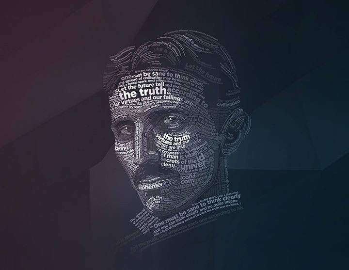

Nikola Tesla
The man who first discovered lightning

Nikola Tesla the first Indigo
Here's a time line of Nikola Tesla's life:
- Jul 10 1856: Tesla was born to Serbian parents in the village of Smiljan, Austrian Empire near the town of Gospić, in the territory of modern-day Croatia.
- 1875: At the Polytechnic school Tesla began his studies in mechanical and electrical engineering.
- 1882: Tesla moved to Paris, to work as an engineer for the Continental Edison Company, designing improvements to electric equipment brought overseas from Edison's ideas.
- 1882: In 1882, Serbian inventor Nikola Tesla identified the rotating magnetic induction field principle used in alternators and pioneered the use of this rotating and inducting electromagnetic field force to generate torque in rotating machines.
- 6 June 1884: Tesla first arrived in the United States, in New York City with little besides a letter of recommendation from Charles Batchelor, a former employer.
- 1885: Tesla claims he was offered US$50,000 (~ US$1.1 million in 2007, adjusted for inflation) if he redesigned Edison's inefficient motor and generators, making an improvement in both service and economy.
- 1886: Nikola Tesla forms Tesla Electric Light and Manufacturing Company
- 1891: A Tesla coil is a type of resonant transformer circuit invented by Nikola Tesla.
Here is a quote from WWF's website:
From my childhood I had been intended for the clergy. This prospect hung like a dark cloud on my mind.
Read more at: https://www.brainyquote.com/quotes/nikola_tesla_596888
-- Nikola Tesla
If you have time, you should read more about this incredible human being on his Wikipedia entry.